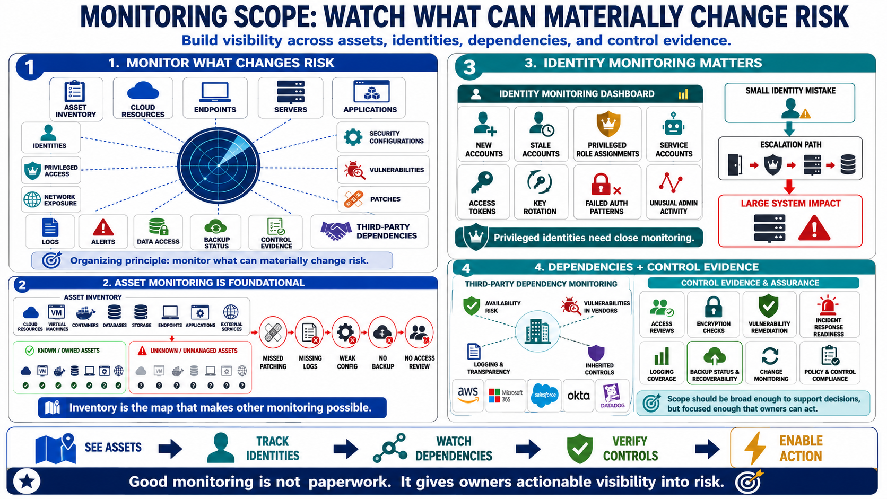

What Organizations Monitor
Connecting to LMS... Progress: in progress

Narration
Monitoring scope should reflect the organization's risk and business context. Most programs need visibility into asset inventory, cloud resources, endpoints, servers, applications, identities, privileged access, network exposure, security configurations, vulnerabilities, patches, logs, alerts, data access, backup status, control evidence, and third-party dependencies. The exact list will vary, but the organizing principle is simple: monitor what can materially change risk.
Asset monitoring is foundational because teams cannot protect what they cannot see. Cloud resources, virtual machines, containers, databases, storage locations, endpoints, applications, and external services need ownership and context. Unknown assets often become unmanaged assets, and unmanaged assets tend to miss patching, logging, configuration, backup, and access review expectations. Inventory is not paperwork; it is the map that makes other monitoring possible.
Identity monitoring is just as important. New accounts, stale accounts, privileged role assignments, service accounts, access tokens, key rotation, failed authentication patterns, and unusual administrative activity can all affect risk. Privileged identities deserve especially close monitoring because they can create high-impact changes. A small identity mistake can become a large system problem if the account has broad authority.
Monitoring also extends to dependencies and control evidence. A third-party service may affect availability, logging, vulnerability exposure, or inherited controls. Backup status may determine recoverability. Control evidence may show whether access reviews, encryption checks, vulnerability remediation, incident response readiness, and logging coverage are actually operating. The scope should be broad enough to support decisions, but focused enough that owners can act on what is found.